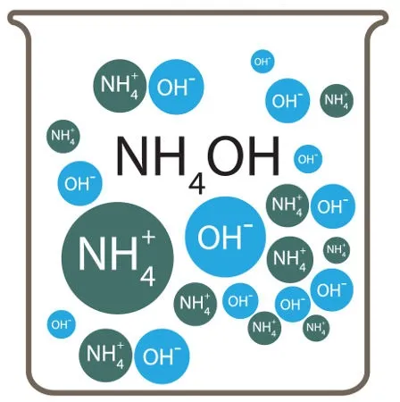

https://brasilescola.uol.com.br/o-que-e/quimica/o-que-e-concentracao-quantidade-materia.htm
Concentração em quantidade de matéria
Na Química, muitas vezes precisamos saber não apenas a massa de uma substância dissolvida, mas também a quantidade de partículas que ela representa. Para isso, podemos utilizar o mol, unidade de quantidade de matéria estudada anteriormente.
A concentração em quantidade de matéria relaciona a quantidade de matéria do soluto ao volume total da solução. Ela é muito utilizada em laboratórios, análises químicas e cálculos envolvendo reações químicas em solução.
1. O que é concentração em quantidade de matéria?
A concentração em quantidade de matéria, representada pela letra C ou, em muitos materiais, por M, indica quantos mols de soluto estão presentes em determinado volume de solução.
Por exemplo, uma solução com concentração de 2 mol/L contém 2 mol de soluto para cada litro de solução.
Essa grandeza também é conhecida como concentração molar ou molaridade. Para evitar confusões, é importante observar a unidade utilizada: mol/L significa quantidade de matéria do soluto dividida pelo volume da solução em litros.
2. Fórmula da concentração molar
A concentração em quantidade de matéria é calculada pela seguinte expressão:
C = n / V
Em que:
- C: concentração em quantidade de matéria, expressa em mol/L.
- n: quantidade de matéria do soluto, expressa em mol.
- V: volume total da solução, expresso em litros (L).
Podemos reorganizar a fórmula para encontrar as outras grandezas:
- Quantidade de matéria: n = C × V
- Volume da solução: V = n / C
Assim como na concentração comum, devemos utilizar o volume total da solução, e não apenas o volume do solvente.
3. Calculando a concentração molar
Exemplo 1 — Calculando a concentração
Uma solução contém 0,5 mol de cloreto de sódio (NaCl) em um volume final de 2 L. Qual é sua concentração molar?
Dados:
- n = 0,5 mol
- V = 2 L
Aplicando a fórmula:
C = n / V
C = 0,5 / 2
C = 0,25 mol/L
Resposta: a concentração da solução é de 0,25 mol/L.
Exemplo 2 — Calculando a quantidade de matéria
Um recipiente contém 500 mL de uma solução de glicose (C6H12O6) com concentração de 0,4 mol/L. Qual é a quantidade de matéria de glicose presente?
Primeiro, convertemos o volume para litros:
500 mL = 0,5 L
Agora, utilizamos n = C × V:
n = 0,4 × 0,5
n = 0,2 mol
Resposta: a solução contém 0,2 mol de glicose.
Exemplo 3 — Calculando o volume
Uma solução possui 1,5 mol de soluto e concentração de 0,5 mol/L. Qual é o volume total da solução?
Aplicando V = n / C:
V = 1,5 / 0,5
V = 3 L
Resposta: o volume da solução é de 3 L.
4. Convertendo massa em quantidade de matéria
Em muitos exercícios, a massa do soluto é fornecida em gramas, mas a fórmula da concentração molar exige a quantidade de matéria em mol. Nesse caso, precisamos utilizar a massa molar da substância.
A relação entre massa, quantidade de matéria e massa molar é:
n = m / MM
Em que:
- n: quantidade de matéria, em mol.
- m: massa da substância, em gramas (g).
- MM: massa molar, em g/mol.
Combinando essa relação com a fórmula da concentração molar, podemos calcular a concentração diretamente a partir da massa do soluto:
C = m / (MM × V)
Nessa expressão, a massa deve estar em gramas, a massa molar em g/mol e o volume em litros.
Exemplo 4 — Calculando a concentração a partir da massa
Uma solução foi preparada com 11,7 g de cloreto de sódio (NaCl), apresentando volume final de 500 mL. Sabendo que a massa molar do NaCl é aproximadamente 58,5 g/mol, determine a concentração molar.
1º passo: converter o volume.
500 mL = 0,5 L
2º passo: calcular a quantidade de matéria.
n = m / MM
n = 11,7 / 58,5
n = 0,2 mol
3º passo: calcular a concentração.
C = n / V
C = 0,2 / 0,5
C = 0,4 mol/L
Resposta: a concentração molar da solução é de 0,4 mol/L.
5. Relação entre concentração comum e concentração molar
A concentração comum, estudada na página anterior, relaciona a massa do soluto ao volume da solução, geralmente em g/L. Já a concentração molar relaciona a quantidade de matéria do soluto ao volume da solução, em mol/L.
Como a quantidade de matéria pode ser calculada dividindo a massa pela massa molar, podemos relacionar as duas formas de concentração.
A expressão é:
C = Ccomum / MM
Em que:
- C: concentração molar, em mol/L.
- Ccomum: concentração comum, em g/L.
- MM: massa molar do soluto, em g/mol.
Essa relação é válida quando as unidades são compatíveis e a massa molar corresponde ao soluto considerado.
Exemplo 5 — Convertendo concentração comum em molaridade
Uma solução de NaOH apresenta concentração comum de 20 g/L. Sabendo que a massa molar do NaOH é 40 g/mol, calcule sua concentração molar.
Aplicando a relação:
C = Ccomum / MM
C = 20 / 40
C = 0,5 mol/L
Resposta: a concentração molar é de 0,5 mol/L.
6. Cuidados importantes
- Volume: se a concentração estiver em mol/L, o volume deve ser expresso em litros.
- Quantidade de matéria: não confunda mol com grama. O mol representa quantidade de matéria; a grama é uma unidade de massa.
- Massa molar: utilize a massa molar correta para a substância presente na solução.
- Volume final: considere o volume total da solução preparada, não apenas o volume inicial do solvente.
- Identificação do soluto: em uma solução com vários solutos, a concentração molar deve especificar a qual soluto se refere.
Resumo
- A concentração molar relaciona os mols de soluto ao volume total da solução.
- A fórmula principal é C = n / V.
- Para encontrar a quantidade de matéria, utilize n = C × V.
- Para converter massa em mol, utilize n = m / MM.
- Também é possível calcular C pela expressão C = m / (MM × V).
- A relação entre concentração comum e concentração molar é C = Ccomum / MM.
- A unidade usual da concentração molar é mol/L.
Exercícios de fixação
1. Explique o que representa a concentração em quantidade de matéria e indique sua unidade mais utilizada.
2. Uma solução contém 0,8 mol de soluto em 4 L de solução. Calcule sua concentração molar.
3. Uma solução de volume final igual a 250 mL apresenta concentração de 2 mol/L. Determine a quantidade de matéria do soluto.
4. Uma solução contém 1,2 mol de soluto e apresenta concentração de 0,4 mol/L. Calcule seu volume em litros e em mililitros.
5. Foram dissolvidos 9,8 g de H2SO4 em água, obtendo-se 500 mL de solução. Considerando a massa molar do H2SO4 igual a 98 g/mol, determine a concentração molar.
6. Uma solução contém 5,85 g de NaCl em volume final de 200 mL. Sabendo que a massa molar do NaCl é 58,5 g/mol, calcule sua concentração molar.
7. Uma solução apresenta concentração comum de 30 g/L. Sabendo que a massa molar do soluto é 60 g/mol, determine a concentração molar.
8. Qual massa de NaOH é necessária para preparar 250 mL de uma solução com concentração de 0,2 mol/L? Considere a massa molar do NaOH igual a 40 g/mol.
9. Duas soluções do mesmo soluto apresentam concentrações de 0,5 mol/L e 1,5 mol/L. Compare as quantidades de matéria presentes em volumes iguais dessas soluções.
10. Explique por que não é possível calcular a concentração molar de uma solução conhecendo apenas a massa do soluto, sem outras informações.
O conteúdo dessa página foi gerado por IA pois a Moderna PLUS não se aprofunda aos conceitos de base.
Fontes consultadas e complementares: